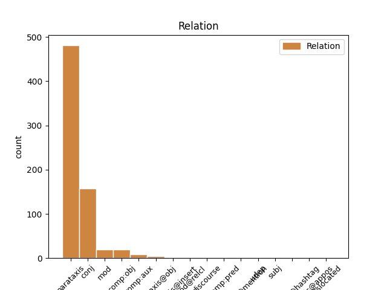
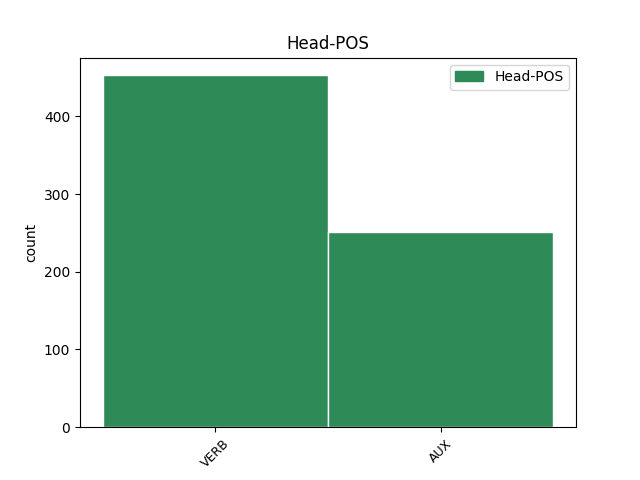
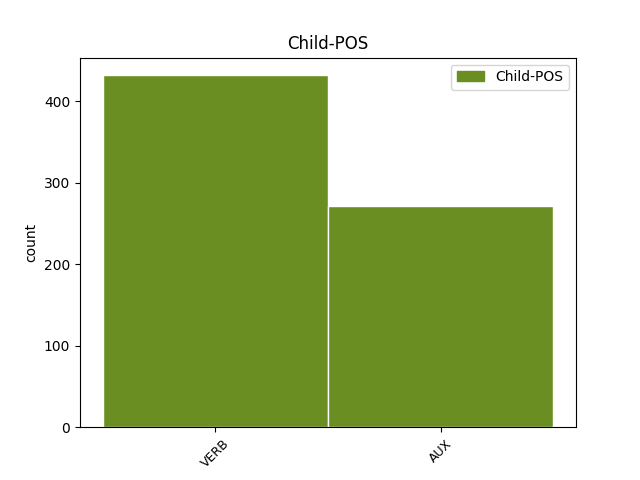

Distribution of features within this leaf



Agreement Rules sorted by frequency.
- When the dependent token is the parataxis(parataxis) of the head token, and the head token is VERB and the dependent token is VERB.
1 Porta _ _ _ _ 0 _ _ _
2 a _ _ _ _ 0 _ _ _
3 Porta _ _ _ _ 0 _ _ _
4 compie compiere VERB V Mood=Ind|Number=Sing|Person=3|Tense=Pres|VerbForm=Fin 0 _ _ _
5 vent’ _ _ _ _ 0 _ _ _
6 anni _ _ _ _ 0 _ _ _
7 . _ _ _ _ 0 _ _ _
8 Ecco _ _ _ _ 0 _ _ _
9 perché _ _ _ _ 0 _ _ _
10 Berlusconi _ _ _ _ 0 _ _ _
11 non _ _ _ _ 0 _ _ _
12 ci _ _ _ _ 0 _ _ _
13 va _ _ _ _ 0 _ _ _
14 più _ _ _ _ 0 _ _ _
15 . _ _ _ _ 0 _ _ _
16 [ _ _ _ _ 0 _ _ _
17 CONTINUA continuare VERB V Mood=Ind|Number=Sing|Person=3|Tense=Pres|VerbForm=Fin 4 parataxis _ _
18 su _ _ _ _ 0 _ _ _
19 http://t.co/oDPUtx2DvV _ _ _ _ 0 _ _ _
20 ] _ _ _ _ 0 _ _ _
1 Salvini _ _ _ _ 0 _ _ _
2 : _ _ _ _ 0 _ _ _
3 " _ _ _ _ 0 _ _ _
4 A _ _ _ _ 0 _ _ _
5 settembre _ _ _ _ 0 _ _ _
6 fermerò fermare VERB V Mood=Ind|Number=Sing|Person=1|Tense=Fut|VerbForm=Fin 0 _ _ _
7 l' _ _ _ _ 0 _ _ _
8 Italia _ _ _ _ 0 _ _ _
9 per _ _ _ _ 0 _ _ _
10 tre _ _ _ _ 0 _ _ _
11 giorni _ _ _ _ 0 _ _ _
12 " _ _ _ _ 0 _ _ _
13 . _ _ _ _ 0 _ _ _
14 Si _ _ _ _ 0 _ _ _
15 sta stare AUX VA Mood=Ind|Number=Sing|Person=3|Tense=Pres|VerbForm=Fin 6 parataxis _ _
16 preparando _ _ _ _ 0 _ _ _
17 a _ _ _ _ 0 _ _ _
18 dire _ _ _ _ 0 _ _ _
19 la _ _ _ _ 0 _ _ _
20 stronzata _ _ _ _ 0 _ _ _
21 definitiva _ _ _ _ 0 _ _ _
22 . _ _ _ _ 0 _ _ _
23 [ _ _ _ _ 0 _ _ _
24 comagirl00 _ _ _ _ 0 _ _ _
25 ] _ _ _ _ 0 _ _ _
1 #tfaordinario _ _ _ _ 0 _ _ _
2 è essere AUX VA Mood=Ind|Number=Sing|Person=3|Tense=Pres|VerbForm=Fin 0 _ _ _
3 stato _ _ _ _ 0 _ _ _
4 il _ _ _ _ 0 _ _ _
5 fondo _ _ _ _ 0 _ _ _
6 cassa _ _ _ _ 0 _ _ _
7 per _ _ _ _ 0 _ _ _
8 la _ _ _ _ 0 _ _ _
9 riforma _ _ _ _ 0 _ _ _
10 di _ _ _ _ 0 _ _ _
11 la _ _ _ _ 0 _ _ _
12 #labuonascuola _ _ _ _ 0 _ _ _
13 di _ _ _ _ 0 _ _ _
14 @user _ _ _ _ 0 _ _ _
15 . _ _ _ _ 0 _ _ _
16 Beneficienza _ _ _ _ 0 _ _ _
17 la _ _ _ _ 0 _ _ _
18 faccio fare VERB V Mood=Ind|Number=Sing|Person=1|Tense=Pres|VerbForm=Fin 2 parataxis _ _
19 quando _ _ _ _ 0 _ _ _
20 dico _ _ _ _ 0 _ _ _
21 io _ _ _ _ 0 _ _ _
22 !!!! _ _ _ _ 0 _ _ _
1 Ok _ _ _ _ 0 _ _ _
2 @user _ _ _ _ 0 _ _ _
3 ho _ _ _ _ 0 _ _ _
4 capito _ _ _ _ 0 _ _ _
5 torno tornare VERB V Mood=Ind|Number=Sing|Person=1|Tense=Pres|VerbForm=Fin 0 _ _ _
6 a _ _ _ _ 0 _ _ _
7 fare _ _ _ _ 0 _ _ _
8 esami _ _ _ _ 0 _ _ _
9 per _ _ _ _ 0 _ _ _
10 il _ _ _ _ 0 _ _ _
11 debito _ _ _ _ 0 _ _ _
12 , _ _ _ _ 0 _ _ _
13 torno tornare VERB V Mood=Ind|Number=Sing|Person=1|Tense=Pres|VerbForm=Fin 5 conj _ _
14 a _ _ _ _ 0 _ _ _
15 lavorare _ _ _ _ 0 _ _ _
16 che _ _ _ _ 0 _ _ _
17 è _ _ _ _ 0 _ _ _
18 meglio _ _ _ _ 0 _ _ _
19 ! _ _ _ _ 0 _ _ _
20 #labuonascuola _ _ _ _ 0 _ _ _
1 Debora _ _ _ _ 0 _ _ _
2 Serracchiani _ _ _ _ 0 _ _ _
3 : _ _ _ _ 0 _ _ _
4 " _ _ _ _ 0 _ _ _
5 Se _ _ _ _ 0 _ _ _
6 cadiamo _ _ _ _ 0 _ _ _
7 , _ _ _ _ 0 _ _ _
8 le _ _ _ _ 0 _ _ _
9 alternative _ _ _ _ 0 _ _ _
10 sono essere AUX V Mood=Ind|Number=Plur|Person=3|Tense=Pres|VerbForm=Fin 0 _ _ _
11 Grillo _ _ _ _ 0 _ _ _
12 e _ _ _ _ 0 _ _ _
13 Salvini _ _ _ _ 0 _ _ _
14 " _ _ _ _ 0 _ _ _
15 . _ _ _ _ 0 _ _ _
16 Che _ _ _ _ 0 _ _ _
17 poi _ _ _ _ 0 _ _ _
18 è essere AUX V Mood=Ind|Number=Sing|Person=3|Tense=Pres|VerbForm=Fin 10 parataxis _ _
19 il _ _ _ _ 0 _ _ _
20 motivo _ _ _ _ 0 _ _ _
21 per _ _ _ _ 0 _ _ _
22 cui _ _ _ _ 0 _ _ _
23 non _ _ _ _ 0 _ _ _
24 cadete _ _ _ _ 0 _ _ _
25 . _ _ _ _ 0 _ _ _
26 [ _ _ _ _ 0 _ _ _
27 @user _ _ _ _ 0 _ _ _
28 ] _ _ _ _ 0 _ _ _
1 Di _ _ _ _ 0 _ _ _
2 Pietro _ _ _ _ 0 _ _ _
3 ha avere AUX VA Mood=Ind|Number=Sing|Person=3|Tense=Pres|VerbForm=Fin 0 _ _ _
4 detto _ _ _ _ 0 _ _ _
5 no _ _ _ _ 0 _ _ _
6 a _ _ _ _ 0 _ _ _
7 Mario _ _ _ _ 0 _ _ _
8 Monti _ _ _ _ 0 _ _ _
9 Presidente _ _ _ _ 0 _ _ _
10 di _ _ _ _ 0 _ _ _
11 il _ _ _ _ 0 _ _ _
12 Consiglio _ _ _ _ 0 _ _ _
13 ... _ _ _ _ 0 _ _ _
14 ma _ _ _ _ 0 _ _ _
15 ha avere AUX VA Mood=Ind|Number=Sing|Person=3|Tense=Pres|VerbForm=Fin 3 conj _ _
16 detto _ _ _ _ 0 _ _ _
17 sì _ _ _ _ 0 _ _ _
18 a _ _ _ _ 0 _ _ _
19 Mannagggiament _ _ _ _ 0 _ _ _
20 ! _ _ _ _ 0 _ _ _
21 ( _ _ _ _ 0 _ _ _
22 ... _ _ _ _ 0 _ _ _
23 ebook _ _ _ _ 0 _ _ _
24 o _ _ _ _ 0 _ _ _
25 libro _ _ _ _ 0 _ _ _
26 cartaceo _ _ _ _ 0 _ _ _
27 ! _ _ _ _ 0 _ _ _
28 ) _ _ _ _ 0 _ _ _
1 Con _ _ _ _ 0 _ _ _
2 la _ _ _ _ 0 _ _ _
3 " _ _ _ _ 0 _ _ _
4 buona _ _ _ _ 0 _ _ _
5 scuola _ _ _ _ 0 _ _ _
6 " _ _ _ _ 0 _ _ _
7 di _ _ _ _ 0 _ _ _
8 Renzi _ _ _ _ 0 _ _ _
9 viene venire AUX VA Mood=Ind|Number=Sing|Person=3|Tense=Pres|VerbForm=Fin 0 _ _ _
10 toccato _ _ _ _ 0 _ _ _
11 il _ _ _ _ 0 _ _ _
12 fondo _ _ _ _ 0 _ _ _
13 e _ _ _ _ 0 _ _ _
14 si _ _ _ _ 0 _ _ _
15 distruggono distruggere VERB V Mood=Ind|Number=Plur|Person=3|Tense=Pres|VerbForm=Fin 9 conj _ _
16 le _ _ _ _ 0 _ _ _
17 basi _ _ _ _ 0 _ _ _
18 di _ _ _ _ 0 _ _ _
19 la _ _ _ _ 0 _ _ _
20 scuola _ _ _ _ 0 _ _ _
21 pubblica _ _ _ _ 0 _ _ _
22 e _ _ _ _ 0 _ _ _
23 repubblicana _ _ _ _ 0 _ _ _
24 . _ _ _ _ 0 _ _ _
25 La _ _ _ _ 0 _ _ _
26 Gelmini _ _ _ _ 0 _ _ _
27 esulta _ _ _ _ 0 _ _ _
28 . _ _ _ _ 0 _ _ _
1 #Renzie _ _ _ _ 0 _ _ _
2 promette promettere VERB V Mood=Ind|Number=Sing|Person=3|Tense=Pres|VerbForm=Fin 0 _ _ _
3 di _ _ _ _ 0 _ _ _
4 investire _ _ _ _ 0 _ _ _
5 su _ _ _ _ 0 _ _ _
6 #labuonascuola _ _ _ _ 0 _ _ _
7 , _ _ _ _ 0 _ _ _
8 ma _ _ _ _ 0 _ _ _
9 vuole volere AUX VM Mood=Ind|Number=Sing|Person=3|Tense=Pres|VerbForm=Fin 2 conj _ _
10 tagliare _ _ _ _ 0 _ _ _
11 il _ _ _ _ 0 _ _ _
12 3 _ _ _ _ 0 _ _ _
13 % _ _ _ _ 0 _ _ _
14 di _ _ _ _ 0 _ _ _
15 spesa _ _ _ _ 0 _ _ _
16 da _ _ _ _ 0 _ _ _
17 tutti _ _ _ _ 0 _ _ _
18 Ministeri _ _ _ _ 0 _ _ _
19 ( _ _ _ _ 0 _ _ _
20 anche _ _ _ _ 0 _ _ _
21 MIUR _ _ _ _ 0 _ _ _
22 ) _ _ _ _ 0 _ _ _
23 #EffettoSottoZeroConGelato _ _ _ _ 0 _ _ _
1 Ok _ _ _ _ 0 _ _ _
2 @user _ _ _ _ 0 _ _ _
3 ho avere AUX VA Mood=Ind|Number=Sing|Person=1|Tense=Pres|VerbForm=Fin 0 _ _ _
4 capito capitare VERB V Mood=Ind|Number=Sing|Person=1|Tense=Pres|VerbForm=Fin 3 comp:aux _ _
5 torno _ _ _ _ 0 _ _ _
6 a _ _ _ _ 0 _ _ _
7 fare _ _ _ _ 0 _ _ _
8 esami _ _ _ _ 0 _ _ _
9 per _ _ _ _ 0 _ _ _
10 il _ _ _ _ 0 _ _ _
11 debito _ _ _ _ 0 _ _ _
12 , _ _ _ _ 0 _ _ _
13 torno _ _ _ _ 0 _ _ _
14 a _ _ _ _ 0 _ _ _
15 lavorare _ _ _ _ 0 _ _ _
16 che _ _ _ _ 0 _ _ _
17 è _ _ _ _ 0 _ _ _
18 meglio _ _ _ _ 0 _ _ _
19 ! _ _ _ _ 0 _ _ _
20 #labuonascuola _ _ _ _ 0 _ _ _
1 Tutt' _ _ _ _ 0 _ _ _
2 Italia _ _ _ _ 0 _ _ _
3 si _ _ _ _ 0 _ _ _
4 chiede chiedere VERB V Mood=Ind|Number=Sing|Person=3|Tense=Pres|VerbForm=Fin 0 _ _ _
5 quanto _ _ _ _ 0 _ _ _
6 durerà durare VERB V Mood=Ind|Number=Sing|Person=3|Tense=Fut|VerbForm=Fin 4 comp:obj _ _
7 il _ _ _ _ 0 _ _ _
8 #Governo _ _ _ _ 0 _ _ _
9 #Monti _ _ _ _ 0 _ _ _
10 ?! _ _ _ _ 0 _ _ _
11 Ovvio _ _ _ _ 0 _ _ _
12 ! _ _ _ _ 0 _ _ _
13 Tempo _ _ _ _ 0 _ _ _
14 di _ _ _ _ 0 _ _ _
15 una _ _ _ _ 0 _ _ _
16 scalata _ _ _ _ 0 _ _ _
17 ! _ _ _ _ 0 _ _ _
18 #oramonti _ _ _ _ 0 _ _ _
19 #sapevatelo _ _ _ _ 0 _ _ _
1 Non _ _ _ _ 0 _ _ _
2 ho avere AUX VA Mood=Ind|Number=Sing|Person=1|Tense=Pres|VerbForm=Fin 0 _ _ _
3 neanche _ _ _ _ 0 _ _ _
4 guardato _ _ _ _ 0 _ _ _
5 il _ _ _ _ 0 _ _ _
6 " _ _ _ _ 0 _ _ _
7 patt _ _ _ _ 0 _ _ _
8 ( _ _ _ _ 0 _ _ _
9 cc _ _ _ _ 0 _ _ _
10 ) _ _ _ _ 0 _ _ _
11 o _ _ _ _ 0 _ _ _
12 educativo _ _ _ _ 0 _ _ _
13 " _ _ _ _ 0 _ _ _
14 , _ _ _ _ 0 _ _ _
15 tanto _ _ _ _ 0 _ _ _
16 so sapere VERB V Mood=Ind|Number=Sing|Person=1|Tense=Pres|VerbForm=Fin 2 mod _ _
17 che _ _ _ _ 0 _ _ _
18 non _ _ _ _ 0 _ _ _
19 avrò _ _ _ _ 0 _ _ _
20 i _ _ _ _ 0 _ _ _
21 requisiti _ _ _ _ 0 _ _ _
22 per _ _ _ _ 0 _ _ _
23 essere _ _ _ _ 0 _ _ _
24 meritevole _ _ _ _ 0 _ _ _
25 : _ _ _ _ 0 _ _ _
26 la _ _ _ _ 0 _ _ _
27 buona _ _ _ _ 0 _ _ _
28 scuola _ _ _ _ 0 _ _ _
29 è _ _ _ _ 0 _ _ _
30 " _ _ _ _ 0 _ _ _
31 altrove _ _ _ _ 0 _ _ _
32 " _ _ _ _ 0 _ _ _
33 !!! _ _ _ _ 0 _ _ _
1 Scusate _ _ _ _ 0 _ _ _
2 , _ _ _ _ 0 _ _ _
3 sapete sapere VERB V Mood=Ind|Number=Plur|Person=2|Tense=Pres|VerbForm=Fin 0 _ _ _
4 chi _ _ _ _ 0 _ _ _
5 ha avere AUX VA Mood=Ind|Number=Sing|Person=3|Tense=Pres|VerbForm=Fin 3 comp:obj _ _
6 ucciso _ _ _ _ 0 _ _ _
7 Regeni _ _ _ _ 0 _ _ _
8 oggi _ _ _ _ 0 _ _ _
9 ? _ _ _ _ 0 _ _ _
1 Governo _ _ _ _ 0 _ _ _
2 Monti _ _ _ _ 0 _ _ _
3 : _ _ _ _ 0 _ _ _
4 Golpe _ _ _ _ 0 _ _ _
5 ? _ _ _ _ 0 _ _ _
6 Alieni _ _ _ _ 0 _ _ _
7 ? _ _ _ _ 0 _ _ _
8 Massoni _ _ _ _ 0 _ _ _
9 ? _ _ _ _ 0 _ _ _
10 : _ _ _ _ 0 _ _ _
11 Il _ _ _ _ 0 _ _ _
12 Tg1 _ _ _ _ 0 _ _ _
13 è essere AUX V Mood=Ind|Number=Sing|Person=3|Tense=Pres|VerbForm=Fin 0 _ _ _
14 attonito _ _ _ _ 0 _ _ _
15 : _ _ _ _ 0 _ _ _
16 ma _ _ _ _ 0 _ _ _
17 chi _ _ _ _ 0 _ _ _
18 sono essere AUX V Mood=Ind|Number=Plur|Person=3|Tense=Pres|VerbForm=Fin 13 parataxis@obj _ _
19 questi _ _ _ _ 0 _ _ _
20 ? _ _ _ _ 0 _ _ _
21 Perché _ _ _ _ 0 _ _ _
22 fra _ _ _ _ 0 _ _ _
23 le _ _ _ _ 0 _ _ _
24 donne _ _ _ _ 0 _ _ _
25 non _ _ _ _ 0 _ _ _
26 ce _ _ _ _ 0 _ _ _
27 n' _ _ _ _ 0 _ _ _
28 è _ _ _ _ 0 _ _ _
29 ne... _ _ _ _ 0 _ _ _
30 http://t.co/0lVOZdTc _ _ _ _ 0 _ _ _
1 Una _ _ _ _ 0 _ _ _
2 volta _ _ _ _ 0 _ _ _
3 lo _ _ _ _ 0 _ _ _
4 sciopero _ _ _ _ 0 _ _ _
5 scolastico _ _ _ _ 0 _ _ _
6 era _ _ _ _ 0 _ _ _
7 a _ _ _ _ 0 _ _ _
8 il _ _ _ _ 0 _ _ _
9 sabato _ _ _ _ 0 _ _ _
10 , _ _ _ _ 0 _ _ _
11 da _ _ _ _ 0 _ _ _
12 quando _ _ _ _ 0 _ _ _
13 c' _ _ _ _ 0 _ _ _
14 è essere VERB V Mood=Ind|Number=Sing|Person=3|Tense=Pres|VerbForm=Fin 23 mod _ _
15 la _ _ _ _ 0 _ _ _
16 settimana _ _ _ _ 0 _ _ _
17 corta _ _ _ _ 0 _ _ _
18 anche _ _ _ _ 0 _ _ _
19 a _ _ _ _ 0 _ _ _
20 scuola _ _ _ _ 0 _ _ _
21 , _ _ _ _ 0 _ _ _
22 si _ _ _ _ 0 _ _ _
23 anticipa anticipare VERB V Mood=Ind|Number=Sing|Person=3|Tense=Pres|VerbForm=Fin 0 _ _ _
24 tutto _ _ _ _ 0 _ _ _
25 a _ _ _ _ 0 _ _ _
26 il _ _ _ _ 0 _ _ _
27 venerdì _ _ _ _ 0 _ _ _
28 #labuonascuola _ _ _ _ 0 _ _ _
1 Gentiloni _ _ _ _ 0 _ _ _
2 accoglie _ _ _ _ 0 _ _ _
3 i _ _ _ _ 0 _ _ _
4 due _ _ _ _ 0 _ _ _
5 ostaggi _ _ _ _ 0 _ _ _
6 italiani _ _ _ _ 0 _ _ _
7 sopravvissuti _ _ _ _ 0 _ _ _
8 : _ _ _ _ 0 _ _ _
9 " _ _ _ _ 0 _ _ _
10 Chi _ _ _ _ 0 _ _ _
11 non _ _ _ _ 0 _ _ _
12 muore morire VERB V Mood=Ind|Number=Sing|Person=3|Tense=Pres|VerbForm=Fin 14 mod@relcl _ _
13 si _ _ _ _ 0 _ _ _
14 rivede rivedere VERB V Mood=Ind|Number=Sing|Person=3|Tense=Pres|VerbForm=Fin 0 _ _ _
15 ! _ _ _ _ 0 _ _ _
16 " _ _ _ _ 0 _ _ _
17 [ _ _ _ _ 0 _ _ _
18 @user _ _ _ _ 0 _ _ _
19 ] _ _ _ _ 0 _ _ _
1 l' _ _ _ _ 0 _ _ _
2 italia _ _ _ _ 0 _ _ _
3 confida _ _ _ _ 0 _ _ _
4 in _ _ _ _ 0 _ _ _
5 Mario _ _ _ _ 0 _ _ _
6 Monti _ _ _ _ 0 _ _ _
7 .... _ _ _ _ 0 _ _ _
8 anche _ _ _ _ 0 _ _ _
9 se _ _ _ _ 0 _ _ _
10 bene _ _ _ _ 0 _ _ _
11 che _ _ _ _ 0 _ _ _
12 va andare VERB V Mood=Ind|Number=Sing|Person=3|Tense=Pres|VerbForm=Fin 13 udep _ _
13 siamo essere AUX V Mood=Ind|Number=Plur|Person=1|Tense=Pres|VerbForm=Fin 0 _ _ _
14 rovinati _ _ _ _ 0 _ _ _
15 . _ _ _ _ 0 _ _ _
1 Berlusconi _ _ _ _ 0 _ _ _
2 dice dire VERB V Mood=Ind|Number=Sing|Person=3|Tense=Pres|VerbForm=Fin 0 _ _ _
3 sì _ _ _ _ 0 _ _ _
4 a _ _ _ _ 0 _ _ _
5 il _ _ _ _ 0 _ _ _
6 governo _ _ _ _ 0 _ _ _
7 Monti _ _ _ _ 0 _ _ _
8 . _ _ _ _ 0 _ _ _
9 di _ _ _ _ 0 _ _ _
10 il _ _ _ _ 0 _ _ _
11 resto _ _ _ _ 0 _ _ _
12 , _ _ _ _ 0 _ _ _
13 è essere AUX V Mood=Ind|Number=Sing|Person=3|Tense=Pres|VerbForm=Fin 2 discourse _ _
14 un' _ _ _ _ 0 _ _ _
15 ammucchiata _ _ _ _ 0 _ _ _
16 . _ _ _ _ 0 _ _ _
17 #fb _ _ _ _ 0 _ _ _
1 GIUSTO _ _ _ _ 0 _ _ _
2 DOBBIAMO dovere AUX VM Mood=Ind|Number=Plur|Person=1|Tense=Pres|VerbForm=Fin 0 _ _ _
3 FARE _ _ _ _ 0 _ _ _
4 LORO _ _ _ _ 0 _ _ _
5 LA _ _ _ _ 0 _ _ _
6 DANZA _ _ _ _ 0 _ _ _
7 DI _ _ _ _ 0 _ _ _
8 LA _ _ _ _ 0 _ _ _
9 PIOGGIA _ _ _ _ 0 _ _ _
10 COSI' _ _ _ _ 0 _ _ _
11 SONO essere AUX V Mood=Ind|Number=Plur|Person=3|Tense=Pres|VerbForm=Fin 2 mod _ _
12 CONTENTI _ _ _ _ 0 _ _ _
13 ..............!!!!!!!!!!!! _ _ _ _ 0 _ _ _
14 http://t.co/hQZ4qWGbVu _ _ _ _ 0 _ _ _
1 la _ _ _ _ 0 _ _ _
2 posizione _ _ _ _ 0 _ _ _
3 di _ _ _ _ 0 _ _ _
4 il _ _ _ _ 0 _ _ _
5 Governo _ _ _ _ 0 _ _ _
6 Monti _ _ _ _ 0 _ _ _
7 è _ _ _ _ 0 _ _ _
8 forte _ _ _ _ 0 _ _ _
9 e _ _ _ _ 0 _ _ _
10 si _ _ _ _ 0 _ _ _
11 può potere AUX VM Mood=Ind|Number=Sing|Person=3|Tense=Pres|VerbForm=Fin 0 _ _ _
12 riassumere _ _ _ _ 0 _ _ _
13 così _ _ _ _ 0 _ _ _
14 : _ _ _ _ 0 _ _ _
15 liberalizzeremo liberalizzare VERB V Mood=Ind|Number=Plur|Person=1|Tense=Fut|VerbForm=Fin 11 parataxis@obj _ _
16 na _ _ _ _ 0 _ _ _
17 beata _ _ _ _ 0 _ _ _
18 minchia _ _ _ _ 0 _ _ _
19 . _ _ _ _ 0 _ _ _
1 Finisce finire VERB V Mood=Ind|Number=Sing|Person=3|Tense=Pres|VerbForm=Fin 0 _ _ _
2 il _ _ _ _ 0 _ _ _
3 precariato _ _ _ _ 0 _ _ _
4 o _ _ _ _ 0 _ _ _
5 inizia _ _ _ _ 0 _ _ _
6 l' _ _ _ _ 0 _ _ _
7 Odissea _ _ _ _ 0 _ _ _
8 ? _ _ _ _ 0 _ _ _
9 #labuonascuola _ _ _ _ 0 _ _ _
10 di _ _ _ _ 0 _ _ _
11 #renzi _ _ _ _ 0 _ _ _
12 è essere AUX V Mood=Ind|Number=Sing|Person=3|Tense=Pres|VerbForm=Fin 1 parataxis@hashtag _ _
13 #lacattivascuola _ _ _ _ 0 _ _ _
14 #passodopopasso _ _ _ _ 0 _ _ _
15 http://t.co/o0U2qywCyp _ _ _ _ 0 _ _ _
1 * _ _ _ _ 0 _ _ _
2 : _ _ _ _ 0 _ _ _
3 " _ _ _ _ 0 _ _ _
4 Il _ _ _ _ 0 _ _ _
5 governo _ _ _ _ 0 _ _ _
6 Monti _ _ _ _ 0 _ _ _
7 ? _ _ _ _ 0 _ _ _
8 E' essere AUX V Mood=Ind|Number=Sing|Person=3|Tense=Pres|VerbForm=Fin 0 _ _ _
9 in _ _ _ _ 0 _ _ _
10 le _ _ _ _ 0 _ _ _
11 mani _ _ _ _ 0 _ _ _
12 di _ _ _ _ 0 _ _ _
13 Berlusconi _ _ _ _ 0 _ _ _
14 " _ _ _ _ 0 _ _ _
15 , _ _ _ _ 0 _ _ _
16 dicono dire VERB V Mood=Ind|Number=Plur|Person=3|Tense=Pres|VerbForm=Fin 8 parataxis@insert _ _
17 a _ _ _ _ 0 _ _ _
18 il _ _ _ _ 0 _ _ _
19 Pd _ _ _ _ 0 _ _ _
20 http://t.co/i41Ytkl9 _ _ _ _ 0 _ _ _
1 RT _ _ _ _ 0 _ _ _
2 @user _ _ _ _ 0 _ _ _
3 : _ _ _ _ 0 _ _ _
4 Uscire _ _ _ _ 0 _ _ _
5 da _ _ _ _ 0 _ _ _
6 la _ _ _ _ 0 _ _ _
7 stanza _ _ _ _ 0 _ _ _
8 in _ _ _ _ 0 _ _ _
9 pigiama _ _ _ _ 0 _ _ _
10 e _ _ _ _ 0 _ _ _
11 trovar _ _ _ _ 0 _ _ _
12 si _ _ _ _ 0 _ _ _
13 davanti _ _ _ _ 0 _ _ _
14 sconosciuti _ _ _ _ 0 _ _ _
15 che _ _ _ _ 0 _ _ _
16 ti _ _ _ _ 0 _ _ _
17 fissano _ _ _ _ 0 _ _ _
18 . _ _ _ _ 0 _ _ _
19 Cos' _ _ _ _ 0 _ _ _
20 è essere AUX V Mood=Ind|Number=Sing|Person=3|Tense=Pres|VerbForm=Fin 23 discourse _ SpaceAfter=No
21 ? _ _ _ _ 0 _ _ _
22 Non _ _ _ _ 0 _ _ _
23 avete avere AUX VA Mood=Ind|Number=Plur|Person=2|Tense=Pres|VerbForm=Fin 0 _ _ _
24 mai _ _ _ _ 0 _ _ _
25 visto _ _ _ _ 0 _ _ _
26 un _ _ _ _ 0 _ _ _
27 pigiama _ _ _ _ 0 _ _ _
28 co… _ _ _ _ 0 _ _ _
1 @user @user VERB V Mood=Ind|Number=Sing|Person=1|Tense=Pres|VerbForm=Fin 4 vocative@mention _ _
2 e _ _ _ _ 0 _ _ _
3 poi _ _ _ _ 0 _ _ _
4 vogliono volere AUX VM Mood=Ind|Number=Plur|Person=3|Tense=Pres|VerbForm=Fin 0 _ _ _
5 fare _ _ _ _ 0 _ _ _
6 #labuonascuola _ _ _ _ 0 _ _ _
7 con _ _ _ _ 0 _ _ _
8 i _ _ _ _ 0 _ _ _
9 #Quota96Scuola _ _ _ _ 0 _ _ _
10 , _ _ _ _ 0 _ _ _
11 ci _ _ _ _ 0 _ _ _
12 sarebbe _ _ _ _ 0 _ _ _
13 da _ _ _ _ 0 _ _ _
14 ridere _ _ _ _ 0 _ _ _
15 , _ _ _ _ 0 _ _ _
16 invece _ _ _ _ 0 _ _ _
17 noi _ _ _ _ 0 _ _ _
18 ..... _ _ _ _ 0 _ _ _
19 inorridiamo _ _ _ _ 0 _ _ _
20 ! _ _ _ _ 0 _ _ _
21 http://t.co/g8u7YEOJpm _ _ _ _ 0 _ _ _
1 #FF _ _ _ _ 0 _ _ _
2 @user _ _ _ _ 0 _ _ _
3 : _ _ _ _ 0 _ _ _
4 Oh _ _ _ _ 0 _ _ _
5 che _ _ _ _ 0 _ _ _
6 notizia _ _ _ _ 0 _ _ _
7 , _ _ _ _ 0 _ _ _
8 si _ _ _ _ 0 _ _ _
9 va andare VERB V Mood=Ind|Number=Sing|Person=3|Tense=Pres|VerbForm=Fin 0 _ _ _
10 verso _ _ _ _ 0 _ _ _
11 un _ _ _ _ 0 _ _ _
12 governo _ _ _ _ 0 _ _ _
13 Monti _ _ _ _ 0 _ _ _
14 e _ _ _ _ 0 _ _ _
15 lo _ _ _ _ 0 _ _ _
16 spread _ _ _ _ 0 _ _ _
17 diminuisce _ _ _ _ 0 _ _ _
18 . _ _ _ _ 0 _ _ _
19 Che _ _ _ _ 0 _ _ _
20 sorpresa _ _ _ _ 0 _ _ _
21 ! _ _ _ _ 0 _ _ _
22 E essere VERB V Mood=Ind|Number=Sing|Person=3|Tense=Pres|VerbForm=Fin 9 parataxis@appos _ _
23 proprio _ _ _ _ 0 _ _ _
24 una _ _ _ _ 0 _ _ _
25 cosa _ _ _ _ 0 _ _ _
26 di _ _ _ _ 0 _ _ _
27 cui _ _ _ _ 0 _ _ _
28 gioire _ _ _ _ 0 _ _ _
29 ! _ _ _ _ 0 _ _ _
1 Questa _ _ _ _ 0 _ _ _
2 Roma _ _ _ _ 0 _ _ _
3 niente _ _ _ _ 0 _ _ _
4 male _ _ _ _ 0 _ _ _
5 ci _ _ _ _ 0 _ _ _
6 fa _ _ _ _ 0 _ _ _
7 fare _ _ _ _ 0 _ _ _
8 un _ _ _ _ 0 _ _ _
9 buon _ _ _ _ 0 _ _ _
10 Natale _ _ _ _ 0 _ _ _
11 , _ _ _ _ 0 _ _ _
12 e _ _ _ _ 0 _ _ _
13 chi _ _ _ _ 0 _ _ _
14 invece _ _ _ _ 0 _ _ _
15 non _ _ _ _ 0 _ _ _
16 fa fare VERB V Mood=Ind|Number=Sing|Person=3|Tense=Pres|VerbForm=Fin 0 _ _ _
17 sconti _ _ _ _ 0 _ _ _
18 è essere AUX V Mood=Ind|Number=Sing|Person=3|Tense=Pres|VerbForm=Fin 16 dislocated _ _
19 sto _ _ _ _ 0 _ _ _
20 cazzo _ _ _ _ 0 _ _ _
21 de _ _ _ _ 0 _ _ _
22 Mario _ _ _ _ 0 _ _ _
23 Monti _ _ _ _ 0 _ _ _
24 ! _ _ _ _ 0 _ _ _
1 * _ _ _ _ 0 _ _ _
2 FLASH _ _ _ _ 0 _ _ _
3 - _ _ _ _ 0 _ _ _
4 GOVERNO _ _ _ _ 0 _ _ _
5 : _ _ _ _ 0 _ _ _
6 MONTI _ _ _ _ 0 _ _ _
7 , _ _ _ _ 0 _ _ _
8 VISTO _ _ _ _ 0 _ _ _
9 CHE _ _ _ _ 0 _ _ _
10 SPLENDIDA _ _ _ _ 0 _ _ _
11 GIORNATA _ _ _ _ 0 _ _ _
12 ? _ _ _ _ 0 _ _ _
13 - _ _ _ _ 0 _ _ _
14 La _ _ _ _ 0 _ _ _
15 prossima _ _ _ _ 0 _ _ _
16 sarà essere AUX V Mood=Ind|Number=Sing|Person=3|Tense=Fut|VerbForm=Fin 0 _ _ _
17 avete avere AUX VA Mood=Ind|Number=Plur|Person=2|Tense=Pres|VerbForm=Fin 16 subj _ _
18 visto _ _ _ _ 0 _ _ _
19 che _ _ _ _ 0 _ _ _
20 stronzi _ _ _ _ 0 _ _ _
21 ? _ _ _ _ 0 _ _ _
22 :( _ _ _ _ 0 _ _ _
Disagree Examples:
1 Bersani _ _ _ _ 0 _ _ _
2 : _ _ _ _ 0 _ _ _
3 « _ _ _ _ 0 _ _ _
4 Governo _ _ _ _ 0 _ _ _
5 Monti _ _ _ _ 0 _ _ _
6 punti puntare VERB V Mood=Imp|Number=Sing|Person=3|Tense=Pres|VerbForm=Fin 0 _ _ _
7 a _ _ _ _ 0 _ _ _
8 il _ _ _ _ 0 _ _ _
9 cuore _ _ _ _ 0 _ _ _
10 di _ _ _ _ 0 _ _ _
11 gli _ _ _ _ 0 _ _ _
12 italiani _ _ _ _ 0 _ _ _
13 » _ _ _ _ 0 _ _ _
14 . _ _ _ _ 0 _ _ _
15 Il _ _ _ _ 0 _ _ _
16 fegato _ _ _ _ 0 _ _ _
17 se _ _ _ _ 0 _ _ _
18 lo _ _ _ _ 0 _ _ _
19 sono essere AUX VA Mood=Ind|Number=Plur|Person=3|Tense=Pres|VerbForm=Fin 6 parataxis _ _
20 rovinati _ _ _ _ 0 _ _ _
21 con _ _ _ _ 0 _ _ _
22 il _ _ _ _ 0 _ _ _
23 governo _ _ _ _ 0 _ _ _
24 Berlusconi _ _ _ _ 0 _ _ _
25 . _ _ _ _ 0 _ _ _
1 : _ _ _ _ 0 _ _ _
2 abbiamo avere AUX VA Mood=Imp|Number=Plur|Person=1|Tense=Pres|VerbForm=Fin 0 _ _ _
3 voluto _ _ _ _ 0 _ _ _
4 la _ _ _ _ 0 _ _ _
5 bicicletta _ _ _ _ 0 _ _ _
6 ( _ _ _ _ 0 _ _ _
7 il _ _ _ _ 0 _ _ _
8 Governo _ _ _ _ 0 _ _ _
9 Monti _ _ _ _ 0 _ _ _
10 ) _ _ _ _ 0 _ _ _
11 , _ _ _ _ 0 _ _ _
12 ed _ _ _ _ 0 _ _ _
13 ora _ _ _ _ 0 _ _ _
14 si _ _ _ _ 0 _ _ _
15 deve dovere AUX VM Mood=Ind|Number=Sing|Person=3|Tense=Pres|VerbForm=Fin 2 conj _ _
16 pedalare _ _ _ _ 0 _ _ _
17 ... _ _ _ _ 0 _ _ _
1 RT _ _ _ _ 0 _ _ _
2 @user _ _ _ _ 0 _ _ _
3 : _ _ _ _ 0 _ _ _
4 Spero sperare VERB V Mood=Ind|Number=Sing|Person=1|Tense=Pres|VerbForm=Fin 0 _ _ _
5 sia essere AUX V Mood=Sub|Number=Sing|Person=3|Tense=Pres|VerbForm=Fin 4 comp:obj _ _
6 colite _ _ _ _ 0 _ _ _
7 . _ _ _ _ 0 _ _ _
8 Ma _ _ _ _ 0 _ _ _
9 ho _ _ _ _ 0 _ _ _
10 paura _ _ _ _ 0 _ _ _
11 sia _ _ _ _ 0 _ _ _
12 amore _ _ _ _ 0 _ _ _
13 . _ _ _ _ 0 _ _ _
1 RT _ _ _ _ 0 _ _ _
2 @user _ _ _ _ 0 _ _ _
3 : _ _ _ _ 0 _ _ _
4 Spero _ _ _ _ 0 _ _ _
5 sia _ _ _ _ 0 _ _ _
6 colite _ _ _ _ 0 _ _ _
7 . _ _ _ _ 0 _ _ _
8 Ma _ _ _ _ 0 _ _ _
9 ho avere VERB V Mood=Ind|Number=Sing|Person=1|Tense=Pres|VerbForm=Fin 0 _ _ _
10 paura _ _ _ _ 0 _ _ _
11 sia essere AUX V Mood=Sub|Number=Sing|Person=3|Tense=Pres|VerbForm=Fin 9 mod _ _
12 amore _ _ _ _ 0 _ _ _
13 . _ _ _ _ 0 _ _ _
1 Un _ _ _ _ 0 _ _ _
2 manifestante _ _ _ _ 0 _ _ _
3 #NoTav _ _ _ _ 0 _ _ _
4 chiede chiedere VERB V Mood=Ind|Number=Sing|Person=3|Tense=Pres|VerbForm=Fin 0 _ _ _
5 a _ _ _ _ 0 _ _ _
6 Cicchitto _ _ _ _ 0 _ _ _
7 cosa _ _ _ _ 0 _ _ _
8 farebbe fare VERB V Mood=Cnd|Number=Sing|Person=3|Tense=Pres|VerbForm=Fin 4 comp:obj _ _
9 il _ _ _ _ 0 _ _ _
10 #PDL _ _ _ _ 0 _ _ _
11 se _ _ _ _ 0 _ _ _
12 il _ _ _ _ 0 _ _ _
13 governo _ _ _ _ 0 _ _ _
14 #Monti _ _ _ _ 0 _ _ _
15 toccasse _ _ _ _ 0 _ _ _
16 le _ _ _ _ 0 _ _ _
17 TV _ _ _ _ 0 _ _ _
18 di _ _ _ _ 0 _ _ _
19 Berlusconi _ _ _ _ 0 _ _ _
20 ... _ _ _ _ 0 _ _ _
21 KABOOM _ _ _ _ 0 _ _ _
22 ! _ _ _ _ 0 _ _ _
23 #PiazzaPulita _ _ _ _ 0 _ _ _